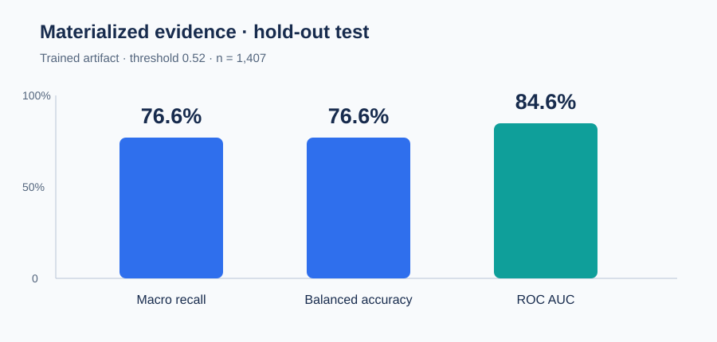
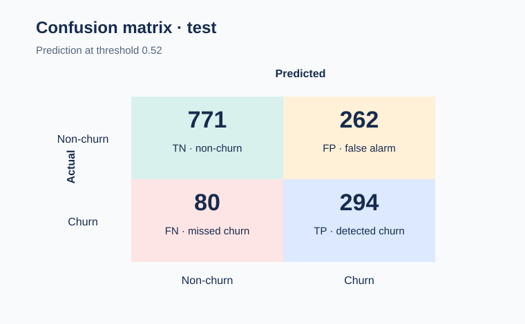

Churn prediction with a modular, auditable decision pipeline
An imbalanced-classification pipeline that turns churn probability into retention prioritization, with reproducible preprocessing, a FastAPI contract and hold-out evaluation.
7,032 customers · 19 features · stratified 80/20 split · threshold 0.52
The objective is actionable risk triage
The Telco Churn dataset has a minority churn class of approximately 26.6%. The project emphasizes macro recall and balanced accuracy so that the majority-class rate does not hide churn cases.
Main reading: the model produces an operational risk ranking; it does not establish that an intervention causes retention.
The current result comes from the trained artifact
The saved artifact at models/churn_pipeline.pkl.gz was checked against the deterministic split (`random_state=738`). Continuous probabilities are used for ROC AUC and threshold 0.52 for classification metrics.


Hold-out evidence supports triage, not proven ROI
The test has 1,407 customers. The reproducible result is macro recall = 0.7662, balanced accuracy = 0.7662, macro precision = 0.7174 and ROC AUC = 0.8462. The matrix is [[771, 262], [80, 294]] under the [[TN, FP], [FN, TP]] convention.
What the evidence supports
- Internal comparison of the pipeline on the hold-out split.
- Customer prioritization for retention investigation.
- Input and response contracts exposed through an API.
What it does not support
- Causal superiority of an offer.
- Observed preserved revenue or ROI.
- Generalization beyond the telecom dataset.
Consistency correction: the published README and notebooks contained 76.4% / 83.5% from earlier materialized outputs. This page uses the current artifact: 76.6% / 84.6%.
Shared logic is separated from the narrative
The project is modular: data, features, evaluation and visualization live in churn_project/; notebooks document exploration and serve_model.py exposes the inference contract.
Shared modules
data.py: reading, cleaning and stratified split.features.py: transformations and selection.evaluation.py: metrics and comparisons.viz.py: reusable PT/EN charts.
Delivery flow
- PT-BR and EN-US notebooks consume the same code base.
train_model.pysaves pipeline and metadata.serve_model.pyexposes/health,/predictand/model/info.- Tests cover data, pipeline and API.
Recommended use and boundaries
It can support
- Technical portfolio and exploratory investigation.
- Initial prioritization for a controlled pilot.
- Reproduction of inference with documented defaults.
It cannot support
- “Production-ready” use without monitoring and temporal validation.
- US$3M revenue or 4.7x ROI as an observed result.
- Automatic intervention without a retention experiment.
Decision boundary: before operational use, validate with temporal data, real costs and a retention experiment; treat impact estimates as hypotheses, not realized benefit.
Sources and reproduction
This report is a communication layer. The modular code, notebooks, tests and versioned artifact remain the technical source of truth.